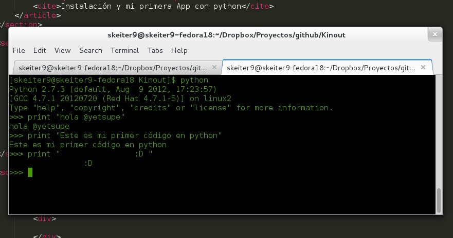
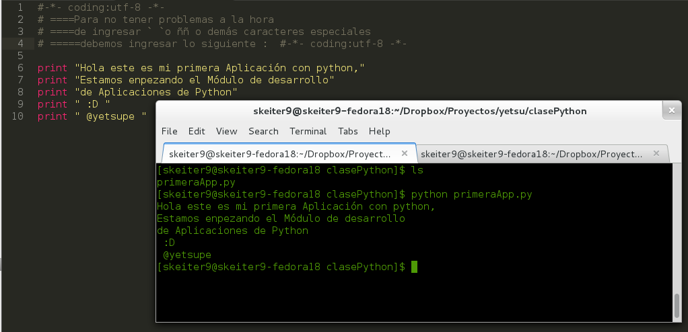
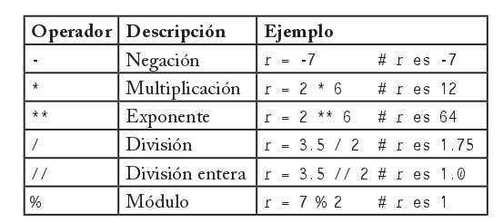

Qués es python ?
Python es un lenguaje de programación Interpretado o de script creado por Guido van Rossum
a principios de los años 90 cuyo nombre está inspirado en el grupo de
cómicos ingleses “Monty Python”. tiene una sintaxis muy limpia y se asemeja a pseudocódigo, con tipado dinámico,fuertemente tipado, multiplataforma y orientado a objetos.
Caracteristicas
Lenguaje interpretado o de script
Un lenguaje interpretado o de script es aquel que se ejecuta utilizando un programa intermedio llamado intérprete, en lugar de compilar el código a lenguaje máquina que pueda comprender y ejecutar directa- mente una computadora (lenguajes compilados). La ventaja de los lenguajes compilados es que su ejecución es más rápida. Sin embargo los lenguajes interpretados son más flexibles y más portables. Python tiene, no obstante, muchas de las características de los lengua- jes compilados, por lo que se podría decir que es semi interpretado. En Python, como en Java y muchos otros lenguajes, el código fuente se traduce a un pseudo código máquina intermedio llamado bytecode la primera vez que se ejecuta, generando archivos .pyc o .pyo (bytecode optimizado), que son los que se ejecutarán en sucesivas ocasiones.
Tipado dinámico
La característica de tipado dinámico se refiere a que no es necesario declarar el tipo de dato que va a contener una determinada variable, 7Python para todos sino que su tipo se determinará en tiempo de ejecución según el tipo del valor al que se asigne, y el tipo de esta variable puede cambiar si se le asigna un valor de otro tipo.
Fuertemente tipado
No se permite tratar a una variable como si fuera de un tipo distinto al que tiene, es necesario convertir de forma explícita dicha variable al nuevo tipo previamente. Por ejemplo, si tenemos una variable que contiene un número no podremos tratarla como un string, no podemos mostrar directamente el número.
codigo=58769
print "El código Ingresado es " + codigo # Error !!!!!
print "El código ingresado es " + str(codigo) #bieeeeen (1)
print "El código ingresado es ",codigo #bieeeeen (2)
print "El código ingresado es %s "%codigo #bieeeeen (3)
Multiplataforma
El intérprete de Python está disponible en multitud de plataformas (UNIX, Solaris, Linux, DOS, Windows, OS/2, Mac OS, etc.) por lo que si no utilizamos librerías específicas de cada plataforma nuestro programa podrá correr en todos estos sistemas sin grandes cambios.
En S.O derivados de unix como gnu/Linux y Mac , python ya
viene instalado por defecto.
Orientado a objetos
La orientación a objetos es un paradigma de programación en el que los conceptos del mundo real relevantes para nuestro problema se tras- ladan a clases y objetos en nuestro programa. La ejecución del progra- ma consiste en una serie de interacciones entre los objetos. Python también permite la programación imperativa
Code Time !Instalación y mi primera App con python
Mi Primera App
Tenemos 2 maneras de ejecutar python
Por Consola

Mi Primera App
Tenemos 2 maneras de ejecutar python
Ejecutando ficheros .py

Comentarios y caracteres Especiales
#-*- coding:utf-8 -*-
#los comentarios en Python se definen con #
#para no tener problemas con caracteres Especiales
#como ``` , ñ , etc debemos agregar la siguiente linea
#en la cabecera de nuestro fichero
#ojo en el caso de S.O derivados de UNIX
#deberiasmos agragar el hasbang
#!/user/bin/python
Típos Básicos y operadores matemáticos
típos de variables :
- Númericos (int,long,complex)
- Strings (cadenas)
- Booleanos (true,false)
operadores Matemáticos
